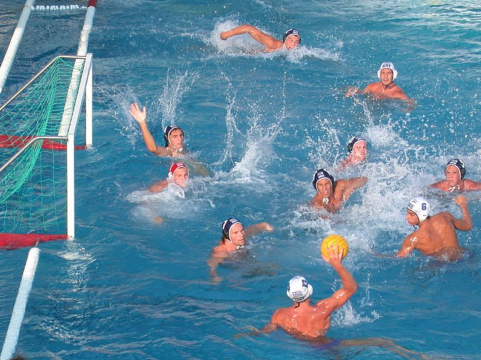

A vízilabda avagy régebbi nevén vízipóló olyan labdajáték,
amelyet kettő 7-7 fős csapattal játszanak. A csapat 6 mezőnyjátékosból és 1 kapusból áll.
A játékidő négy negyedből áll, ahol a gól szerzés a cél.

Az általános forma amelybe a játékosok felállnak a patkó alakzat, mint ahogy a képen látszik.
A védekező játékosoknak célszerű, de nem kötelező a kapunak háttal és
a kapuhoz közelebb felfeküdve elhelyezkedniük.
A vízilabda összetett sportág, főleg a futball, az úszás, a kosárlabda, a röplabda, a jéglabda és a jégkorong elemeiből épül fel.
Egy jó vízilabda-játékos erős, mint egy hokijátékos, pontosan dob, mint egy kosaras
vagy röplabdás, kiváló az állóképessége, akár egy hosszútávúszónak, és remek a taktikai érzéke, akár egy sakkozónak.